Your First C# Windows Form
From now on, we're going to be creating Windows Applications, rather than Console Applications. Windows Applications make use of something called a Form. The Form is blank at first. You then add control to your form, things like buttons, text boxes, menus, check boxes, radio buttons, etc. To get your first look at a Windows Form, do the following.
If you still have your Console Application open from the previous section,
click File from the menu bar at the top of Visual C# Express. From the
File menu, click on Close Solution.
To create your first Windows form project, click the File menu again. This time, select New Project from the menu. When you do, you'll see the New Project dialogue box again:
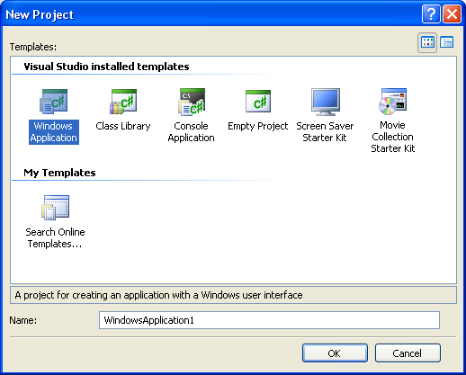
Or this one in C# 2010:
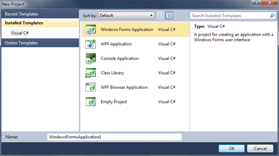
In Visual Studio Express 2012, click Visual C#, under Templates on the left:
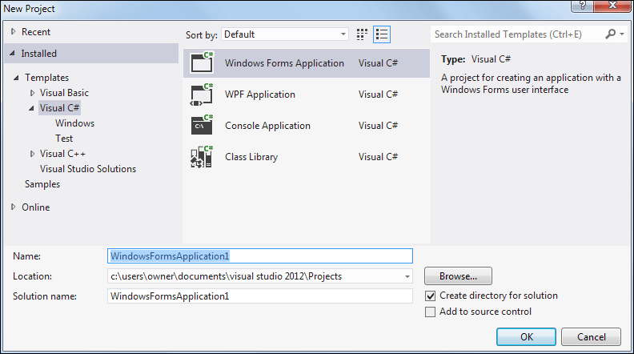
In all versions, select Windows Forms Application (or Windows Application in earlier versions) from the available templates. Keep the Name on the default of WindowsFormsApplication1 and then click OK.
When you click OK, a new Windows Application project will be created for you:
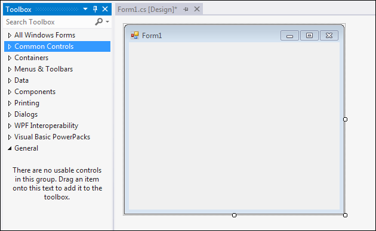
The obvious difference from the Console Application you created in the previous section is the blank Form in the main window. Notice the Toolbox, though, on the left hand side. We'll be adding controls from the Toolbox to that blank Form1 you can see in the image above.
If you can't see the Toolbox, you may just see the Tab, as in the following image:
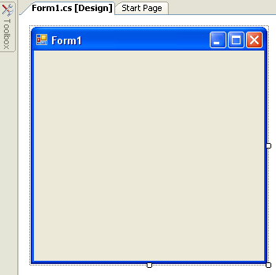
In C# 2010, your screen will look like this:
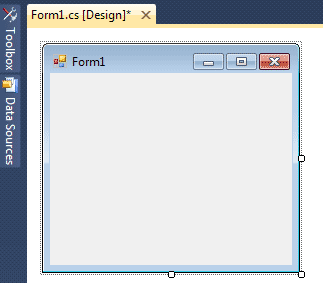
If your screen looks like the one above, move your mouse over to the Toolbox tab. It will expand to look like the first one. If you want to permanently display the Toolbox, click on the pin symbol:
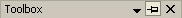
Notice the Solution Explorer on the right side of your screen. (If you can't see the Solution Explorer, click its entry on the View menu at the top of Visual C# Express.) If you compare it with the Solution Explorer when you created your Console Application, you'll see there's only one difference - the Form.
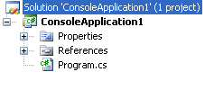 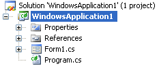
We still have the Properties, the References and the Program.cs file. Double click the Program.cs file to open it, and you'll see some familiar code:
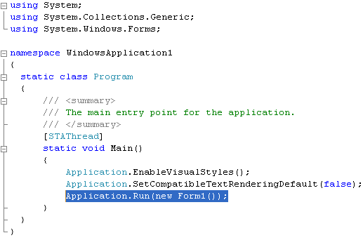
And here's the code from the Console Application:
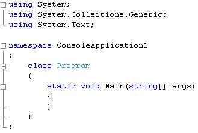
Both have the same using lines, a namespace, a class called Program, and a Main Method.
The Main Method is the entry point for your programme. The code between the curly brackets of Main will get executed when the programme first starts. The last line in the WindowsApplication1 code above is the one that Runs Form1 when the Application starts.
You can do other things here. For example, suppose you had a programme that connects to a server. If it finds a connection then it loads some information from a database. In the Main Method, you could check that the server connection is OK. If it's not, display a second form; if it's OK, then display the first form.
But don't worry if all that code has you scratching your head. The thing to bear in mind here is that a method called Main starts your programme. And Program.cs in the Solution Explorer on the right is where the code for Main lives.
But we won't be writing code in the Program.cs file, so we can close it. Have
a look near the top of the coding window, and you'll some tabs:
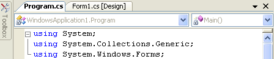
Right click the Program.cs tab and select Close from the menu that appears. You should now see your form again (you may have a Start tab as well. You can close this, if you want).
To see the window where you'll write most of your code, right click Form1.cs in the Solution Explorer:
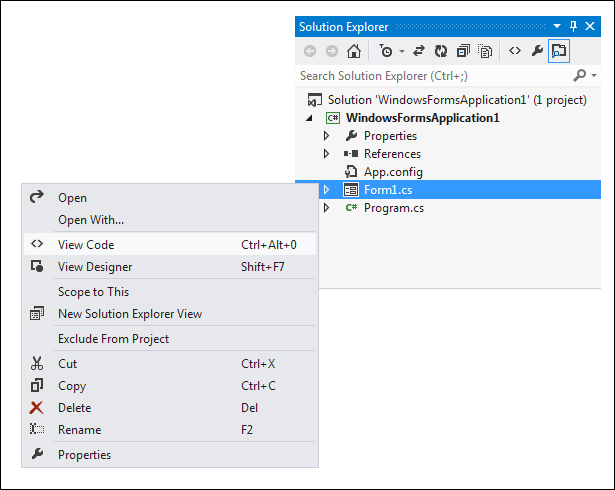
The menu has options for View Code and View Designer. The Designer is the Form you can see at the moment. Click View Code from the menu to see the following window appear (you can also press the F7 key on your keyboard in earlier versions, and CTRL + ALT + 0 in version 2012):
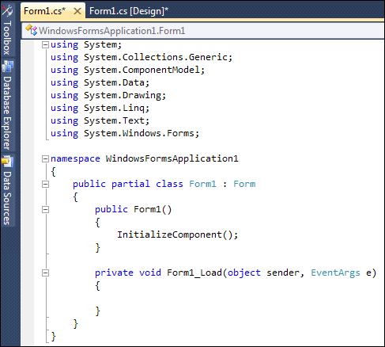
This is the code for the Form itself. This Form (screenshot from version 2008):
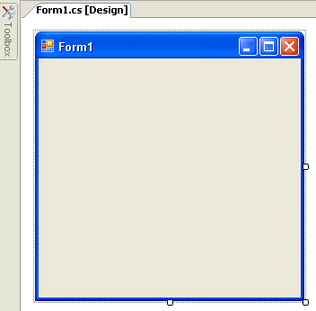
The code has a lot more using statements than before. Don't worry about these for now. They just mean "using some code that's already been written".
The code also says partial class Form1. It's partial because some code is hidden from you. To see the rest of it (which we don't need to alter), click the plus symbol next to Form1.cs in the Solution Explorer:
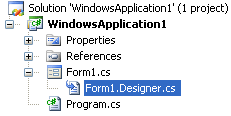
Now double click Form1.Designer.cs. You'll see the following code:
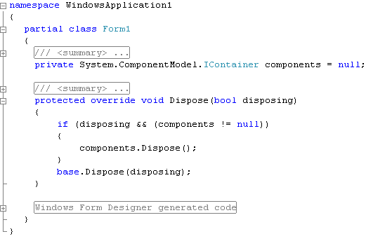
Again, you see partial class Form1, which is the rest of the code. Click the plus symbol next to Windows Form Designer generated code. You'll see the following:
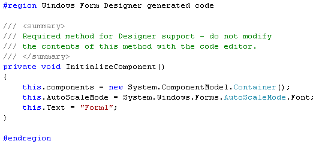
InitializeComponent is code (a Method) that is automatically generated for you when you create a new Windows Application project. As you add things like buttons and text boxes to your form, more code will be added here for you.
But you don't need to do anything in this window, so you can right click the Form1.Designer.cs tab at the top, and click Close from the menu.
Click back on the Form1.cs tab at the top to see you form again. If the tab is not there, right click Form1.cs in the Solution Explorer on the right. From the menu, select View Designer. Here's what you should be looking at:
It's in Designer view that we'll be adding things like buttons and text boxes to our form. But you can run this programme as it is. From the Debug menu at the top, click Start Debugging (Or you can just press the F5 key on your keyboard.):
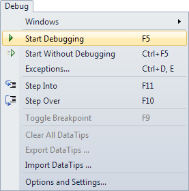
When you click Start Debugging, Visual C# will Build the programme first, and then run it, if it can. If it can't run your programme you'll see error messages.
But you should see your form running on top of Visual Studio. It will have its own Red X, and it's own minimize and maximize buttons. Click the Red X to close your programme, and to return to Visual C# Express.
From now on, when we say Run your programme, this is what we mean: either press F5, or click Debug > Start Debugging.
OK, time for you to start adding things to the form, and to do a little coding!